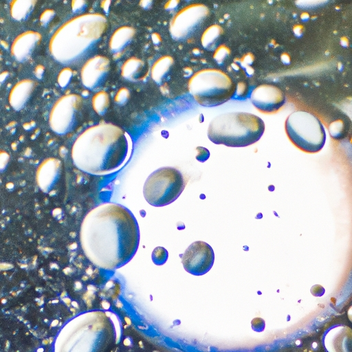

Hydrological Cycle
Hydrological Cycle
Evaporation and transpiration
Condensation and cloud formation
Precipitation and rain patterns
Surface runoff and river systems
Groundwater flow and aquifers
Snowmelt and glacial processes
Water storage in oceans lakes and reservoirs
Soil moisture and infiltration
Water balance and budgeting
Human impact on the hydrological cycle
Marine Ecosystems
Marine Ecosystems
Coral reefs and their biodiversity
Mangrove forests as coastal protectors
Ocean currents and climate regulation
Deepsea habitats and extremophiles
Intertidal zones and estuarine ecosystems
Marine food webs and trophic levels
Freshwater Ecosystems
Freshwater Ecosystems
Conservation efforts for marine species
Marine biogeochemical cycles
Impact of global warming on oceans
Water Resource Management
Water Resource Management
Rivers streams and creeks ecosystems
Lakes ponds wetlands habitats
Biodiversity in freshwater environments
Aquatic plants role in oxygenation
Freshwater fish species diversity
Invasive species impact on freshwater systems
Pollution threats to freshwater sources
Conservation strategies for freshwater biomes
Role of wetlands in flood control
Importance of riparian buffers
Cultural Significance of Water
Cultural Significance of Water
Sustainable water use practices
Desalination technologies for fresh water supply
Wastewater treatment processes
Rainwater harvesting techniques
Management of water during drought conditions
Transboundary water resource politics
Infrastructure for water distribution
Agricultural irrigation efficiency
Urban water demand management
Impact of climate change on water resources
About Us
Contact Us
Water storage in oceans lakes and reservoirs
Aquaculture
Water storage in oceans, lakes, and reservoirs is a fundamental component of the Earth's hydrological cycle.
Water and Sanitation
These vast bodies of water serve as crucial reservoirs that hold and distribute H2O across the globe.
Water storage in oceans lakes and reservoirs - Water Conflict
Molecule
Irrigation
Molecule
Irrigation
Molecule
Aquaculture
Oceans are by far the largest storehouses, containing more than 96 percent of all Earth's water resources. They play an indispensable role in regulating the planet's climate and weather patterns through their absorption and redistribution of solar heat.
Lakes, on the other hand, account for a much smaller portion of Earth's water storage but are exceedingly important at local and regional levels. Freshwater lakes provide habitat for numerous species, support agriculture by supplying irrigation water, sustain communities by providing potable water, and offer recreational opportunities that enrich human life.
Reservoirs—man-made lakes—created by damming rivers, are designed to manage water supplies for human use.
Water Conflict
Climate Change and Water
They enable us to collect and store freshwater for various purposes including drinking water supply, agricultural irrigation, industrial use, hydroelectric power generation, and flood control.
Water Treatment
Reservoirs also contribute to local ecosystems but can alter natural aquatic environments significantly.
The management of these natural and artificial storage systems is vital. Over-extraction from aquifers leading to diminishing lake levels or overfishing affecting oceanic ecosystems can have dire consequences for biodiversity as well as human societies dependent on these waters.
Water storage in oceans lakes and reservoirs - Climate Change and Water
Glaciers and Ice Caps
Molecule
Irrigation
Glaciers and Ice Caps
Climate change poses additional threats through rising sea levels due to melting polar ice caps which could overwhelm coastal areas.
Conservation efforts aimed at protecting our oceans from pollution like plastic waste are essential in maintaining healthy marine environments. Similarly, safeguarding our freshwater sources requires vigilant monitoring of both quantity and quality.
In conclusion, oceans play a dominant global role while lakes enrich our local landscapes; together with man-made reservoirs they form an intricate web supporting life on Earth—an invaluable treasure we must conscientiously protect for future generations.

Hydrological Cycle
Soil moisture and infiltration
Check our other pages :
Sustainable water use practices
Evaporation and transpiration
Urban water demand management
Frequently Asked Questions
How do oceans, lakes, and reservoirs serve as natural storage systems for Earths water?
Oceans, lakes, and reservoirs are crucial components of the Earths hydrological cycle. They act as natural storage systems by holding large volumes of water. Oceans are the largest storage space, containing about 96.5% of all Earth’s water. Lakes store freshwater that can be used for various ecosystems and human needs. Reservoirs, often created by damming rivers, store water primarily for human use such as drinking supply, agricultural irrigation, flood control, and hydroelectric power generation.
What factors affect the quantity of water stored in these natural bodies?
The quantity of water stored in oceans, lakes, and reservoirs is influenced by several factors including climate patterns (such as precipitation and evaporation rates), geological features (like basin size and depth), human activities (such as water withdrawal for consumption and land-use changes), seasonal variations (impacting snowmelt and runoff), and environmental policies (regarding conservation and sustainable management). Global climate change also has a significant impact by altering weather patterns, melting ice caps/glaciers which feed freshwater sources, causing sea-level rise or affecting the frequency/intensity of droughts and floods.
What role do oceans, lakes, and reservoirs play in supporting biodiversity?
Oceans harbor a vast array of marine life forms from microscopic plankton to large mammals like whales. Coral reefs within oceans are among the most diverse ecosystems on the planet. Freshwater bodies like lakes provide habitat to numerous species adapted to less saline conditions compared to oceans—supporting fish populations that contribute to local food webs. Man-made reservoirs can also become biodiverse habitats over time if managed properly; however they might also disrupt existing ecosystems through their creation. These bodies of water collectively support an incredible amount of biodiversity which is essential for maintaining ecological balance on Earth.